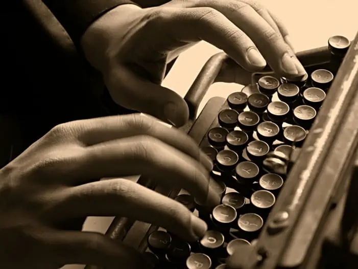

Typing Techniques – 5 Skills to Master
A Beginners Guide to Touch Typing Techniques
Some people type as if they were born with a keyboard under their fingers, while others struggle with even the simplest of words. If you’re part of the second category, or even if you’re somewhere between categories, don’t worry several effective typing techniques can help you achieve an excellent typing speed.
Daily practice is certainly required to achieve higher speeds and greater accuracy. In the end, the results are guaranteed to be worth it, though. This post will introduce you to the best typing techniques and includes tips on how to practice them.
1. Touch Typing Techniques
The most important technique to learn to type faster is touch typing. This is a technique based on developing muscle memory for your fingers, and this is done by combining several other typing techniques into it.
Muscle memory – By practicing regularly your fingers will be able to remember where the letters are on the keyboard, and you’ll be able to type not only without looking at the keyboard but also without consciously thinking about it.
Looking at the keys? – At first, you will need to look at the keyboard, but in time, the need to look at the keys as you type will diminish. Some will say that looking at the keyboard should be avoided even at the beginning, but in my experience, you should only start doing that after you learn all the keys of the home row.
3 Stages – Learning touch typing is done in three steps: first you learn the home row of your keyboard, practice it until you know exactly where each letter is and can easily place your fingers in the correct position without looking at the keyboard.
After this, you will learn to master the rows above and below the home row, the numbers row, and start practicing with special characters and upper case letters. Finally, the fun part: practicing on real texts!
Tip – To practice typing techniques you may need a suitable tutor. There are many available on the market. Here is a review of popular typing software to get you started.
2. Typing Techniques: The Home Row
You may be wondering what the “home row” is, or you’re probably thinking that I’m referring to the keys near the “home” key, but I’m not, and the actual home row is the most important part of your keyboard and the one you (or rather your fingers) will know by heart after a couple of training sessions!
The home for fingers – It’s called the home row because this is the home position for your fingers. This is the position that your fingers will return to after you finish typing something, and this is the position from which you will learn how to find all letters and characters on the keyboard.
Structure – The home row is the row starting with the Caps Lock key, and if you look at your keyboard you will notice two small bumps or lines (depending on your keyboard) on the “F” and “J” key.
Positioning – This is where your index fingers should reside. Your other fingers should rest on the keys to the left of the “F” key, for your left hand, and on the keys to the right of the “J” key, for your right hand.
Movements – By doing this, your pinky fingers should be resting on the “A” key and on the “;” key. Your thumbs will hover above the space key, and you can use either one to press it. Don’t try to use both at the same time, because it quickly gets confusing, trust me!
How to practice – Spend some time getting your fingers familiar with this position, and learning the keys on the home row. Practice this typing technique each day, for several hours, until you can hit each key on the home row without looking at the keyboard.
Useful tools – To make this easier, I encourage you to look for one of the numerous typing tools available online that allow you to practice the home row. Once you are comfortable with the position of the keys and you see that fingers automatically move to the key you want to hit, you are ready to move on to the next step!
Training tip – Congratulations, you are now the master of the home row! However, if you try to type anything you will see that the home row is not enough, and you’re not able to type anything other than “SAF“, “FDS“, “KFS” and so on. However, here is a brief list of words using the home row only.
Not exactly impressive, after several weeks of exercise, is it? Well, don’t get disappointed now, because what you’ve done is solidify the basic part of your training!
3. Typing Techniques: The Top Row
Now being familiar with the home row it’s time to move on to the top row. Did you know the longest words you can type on the Top Row are Typewriter and Quietwriter?
Position – Place your fingers in their default position on the home row, and look at the key above each of your fingers. For “F” this will be the “R” key, for “J” it will be the “U” key, and so on. Each of your fingers should reach to the key directly above it, and start memorizing it.
The only exception to this is your index fingers. They should be able to not only reach the “F” and “J” keys, but also the keys “G“, “H“, and the keys directly above those as well. This is because your index finger is the most mobile and it’s easier to cover a larger number of keys with it.
Practicing – Practice this typing technique until you know the top row just as well as the home row. Now try practicing with a larger text, and you’ll discover that suddenly you’re able to type a large number of words, without looking at the keyboard.
This is an impressive feat, but you’re still not done! You have a whole new row to learn, plus the numpad!
4. Typing Techniques: The Bottom Row
The bottom row is possibly the easiest row to master, because by now, due to all the practice you’ve had, your fingers are much more used to the motions of typing, and your muscle memory is starting to develop.
Technique – All you have to do is learn the new letters of the bottom row using the same principles as the ones used for the top row. Now each of your fingers needs to learn the keys directly below it. Practice, practice, and then practice some more, because this is the final phase of your training!
After you’re satisfied with your progress and you’re able to type most regular words without looking at the keyboard, it’s time to move on to the real deal: texts!
Training tip – Exercising with words is fun, and it’s a perfect way of developing your finger memory, but the real test is typing a large paragraph from a book. You can find online tools for this as well, with some really diverse texts, perfect for getting you used to chain words together.
5. The Numpad Typing Technique
The numpad on a full-sized keyboard requires a typing technique in its own right. If you look at the 5 key you will see the same raised bar as on the “F” and “J” key. Unlike the home row, that is not the position for your index finger; it’s your middle finger that needs to be. Your index finger will rest on the “4” key, while your ring finger will be on the “6” key.
The keys directly above and below each finger are also part of their motion range, and the “+” or “Enter” key can be hit with either your pinky finger or your ring finger. Your thumb is reserved for the “0” key, and I strongly encourage you not to try to hit any other keys with it!
For laptops with a horizontal numeric bar, the positions are slightly different. In general, the left-hand serves the numbers from 1 to 5, the right hand the numbers and symbols from 6 to 0. In detail, you use the left pinky for 1, left ring finger for 2., left middle finger for 3, and the index fingers for 4 and 5. Mirror the position for the right hand. I give credit to my reader Andy Harrison.
Keyboard Techniques – Summary and Tips
If you want to learn how to type quickly and effectively, there’s no other method worth looking into other than touch typing!
Any other method that involves you looking at the keys as you type will be too slow to be worth it. It may not be the easiest typing technique available, and it may not be the fastest to learn, but the results are certainly worth the hard work.
Once you see a true master at work, typing complex phrases without looking at the screen or keyboard while also having a conversation with someone is bound to impress you so much that you won’t want to learn anything else!
Keyboarding Techniques – Rules, Position, Advice
- Mastering the A, S, D, F, J, K, L, ; keys is the most important technique.
- Use a color-coded keyboard to know which keys to press during exercise.
- Trust yourself and locate the key with your finger to build muscle memory.
- Each row and key is reserved to be hit by certain fingers. Stick to it!
- Keep fingers to their designated area to lower distance, improve speed and reduce strain.
- Use the other hand when switching to upper cases to allow simultaneous typing.
- Focus on accuracy first, speed builds up with practice and progress.
- Maintain a typing rhythm with similar time intervals for each keystroke.
- Apply gentle pressure and force when hitting keys to improve efficacy.
- Always maintain good posture while typing.
- Keep a distance of at least 50 cm between eyes & screen to avoid health issues.
- Ensure a minimum height of 70 cm for tabletops to allow a healthy posture
- Practice touch typing techniques regularly to improve accuracy ad speed.
Avoiding RSI syndromes by using correct typing techniques
A well-performed and accurate typing technique will also help reduce the risk of RSI repetitive stress injury, which is also known as the carpal tunnel. This will require correct hand positioning and smooth eye-finger muscle communication. Below are some points to remember.
- Keep your feet on the floor to maintain balance.
- Position your body to the “H” key. Hold your elbows at sides.
- Keep your overall posture in a straight position.
- The chair should be 10-15 cm away from the keyboard.
- Have your fingers curved over the home row keys.
- Remember to keep wrists off the keyboard. You will do this quite often üôÇ
- Eyes should be on the content while fingers locate the keys.
Other tips to build proper keyboarding technique
- Rule of thumb: 80% is technique, 10% is accuracy, 10% is speed.
- Warm-up hands and fingers before long typing sessions
- Stretch and relax fingers afterward
- Tutors can help improve speed & accuracy by teaching the right technique.
- Don’t rush through exercises to learn techniques. Practicing is key.
- Reward yourself for reaching goals or regular exercising